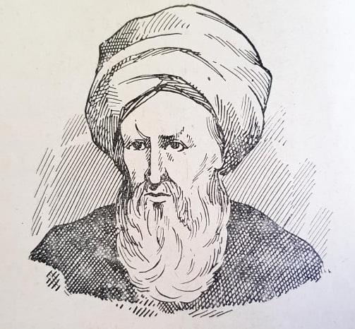

Who Was Ibn Khaldun?
Ibn Khaldun (1332–1406 CE) was a North African historian, philosopher, political thinker, and social theorist whose writings transformed the study of history and human society. He is best known for the Muqaddimah, an introductory work to his larger history that developed influential ideas about civilization, social organization, political power, economics, and historical change.
Ibn Khaldun lived during a period of political instability across North Africa and the Mediterranean. His experience of courts, dynasties, political conflict, tribal societies, and urban life strongly influenced his understanding of how states and civilizations develop and decline.
His philosophy of history was unusual for its time because Ibn Khaldun did not simply record historical events. He attempted to identify the social, political, economic, and environmental causes behind historical change. This makes his work particularly important in the history of social science, sociology, and philosophy of history.
Ibn Khaldun: Quick Facts
- Full name — Abū Zayd ʿAbd al-Raḥmān ibn Khaldūn
- Born — 1332 CE
- Died — 1406 CE
- Born in — Tunis
- Tradition — Islamic philosophy, historiography, social and political thought
- Best-known work — Muqaddimah
- Major concept — ʿasabiyyah, often translated as group solidarity or social cohesion
- Major subjects — History, civilization, society, politics, economics, education, and human organization
- Important concept — ʿumrān, the study of human social organization and civilization
- Known for — Critical historical methodology and theories of social and political change
Ibn Khaldun's Early Life and Historical Background

Ibn Khaldun was born in Tunis in 1332 into a family with a long tradition of scholarship and public service. He received an education in the Islamic intellectual disciplines, including the Quran, jurisprudence, Arabic language, theology, and other branches of learning.
His early intellectual development took place during a period of political fragmentation in the Maghreb. Different dynasties competed for power, while tribal groups and urban states interacted in complex ways.
These experiences became important to Ibn Khaldun's later philosophy of history. Instead of treating political events as isolated occurrences, he attempted to understand the social forces that made particular forms of political organization possible.
Ibn Khaldun's Political Career and Travels
Ibn Khaldun's intellectual development was closely connected with his political career. He served in several administrative and diplomatic positions across North Africa and later spent important periods in Granada, Egypt, and other centers of political and intellectual life.
His experience at different courts gave him firsthand knowledge of political competition, dynastic succession, diplomacy, taxation, and the relationship between rulers and their subjects.
This practical political experience helped shape his analysis of power. Ibn Khaldun's political philosophy was therefore connected not only with abstract theory but also with his observations of how governments and dynasties actually functioned.
What Was Ibn Khaldun's Philosophy?
Ibn Khaldun's philosophy focused on the structure and development of human society. Rather than concentrating only on traditional metaphysical questions, he investigated how people form communities, establish political authority, produce wealth, build cities, and create civilizations.
His philosophical approach to history sought to discover patterns and causal relationships behind historical events. He argued that historians should examine whether reported events were actually compatible with the nature of society and the conditions under which political and economic life operate.
For Ibn Khaldun, understanding history therefore required knowledge of human society. His work connects philosophy of history, social theory, political philosophy, economics, and Islamic intellectual thought.
Ibn Khaldun and Islamic Philosophy
Ibn Khaldun developed his ideas within the intellectual world of medieval Islam. His education included Islamic religious sciences, and his historical analysis was informed by Islamic ideas about society, political authority, religion, law, and human conduct.
At the same time, Ibn Khaldun's intellectual project differed from the classical falsafa tradition represented by philosophers such as Al-Farabi, Avicenna, and Averroes. His major contribution was an empirical and analytical investigation of human society and historical change.
His work therefore occupies an important position within the broader history of Islamic philosophy and medieval intellectual history.
Ibn Khaldun's Philosophy of History
Ibn Khaldun's philosophy of history is one of the most distinctive aspects of his thought. He believed that history should involve more than the collection and transmission of stories. Historians should investigate the causes of events and determine whether historical reports are socially and materially plausible.
His method involved examining political institutions, economic conditions, social organization, geography, patterns of leadership, and relations between different communities.
Ibn Khaldun's philosophy of history consequently treats historical change as something that can be explained through recurring social mechanisms rather than as a random sequence of events.
The Muqaddimah: Ibn Khaldun's Masterpiece
The Muqaddimah, also known as the Prolegomena, is Ibn Khaldun's most famous work. It was originally conceived as an introduction to his larger historical project, but it became an enormously influential work in its own right.
In the Muqaddimah, Ibn Khaldun examines human society, civilization, political authority, economic activity, education, geography, nomadic and urban life, and the rise and decline of dynasties.
The work is particularly important because Ibn Khaldun attempts to establish principles for understanding society and evaluating historical reports. The Muqaddimah of Ibn Khaldun is consequently central to discussions of the philosophy of history and the origins of social science.
What Is Ibn Khaldun's Theory of Asabiyyah?
ʿAsabiyyah is one of the most famous concepts in Ibn Khaldun's philosophy. It is commonly translated using terms such as group solidarity, social cohesion, or group feeling.
Ibn Khaldun used the concept to explain how groups can cooperate, defend themselves, establish political authority, and overcome competing groups. Strong social solidarity can provide a community with the collective power necessary to establish a dynasty or state.
However, Ibn Khaldun's theory of asabiyyah is not simply a theory of tribal loyalty. It describes a broader social mechanism through which collective cohesion can generate political power.
Ibn Khaldun and the Rise and Fall of Civilizations
Ibn Khaldun's analysis of civilization examines how societies develop from relatively cohesive communities into powerful political organizations and eventually experience decline.
A group possessing strong asabiyyah can acquire political authority. Once established, however, rulers and elites may become increasingly dependent on urban wealth, taxation, luxury, and established institutions.
Over time, the solidarity that originally enabled political expansion can weaken. Ibn Khaldun therefore connected the rise and fall of civilizations with changes in social cohesion, political power, economic conditions, and patterns of urban life.
Ibn Khaldun's Theory of Dynastic Cycles
Ibn Khaldun is famous for describing recurring patterns in the rise and decline of ruling dynasties. A dynasty may emerge from a group possessing strong social solidarity and political cohesion.
After gaining power, later generations can become accustomed to comfort, wealth, political privilege, and urban luxury. Their connection with the original group solidarity may weaken.
As political authority becomes more dependent on taxation and coercive institutions, a new group with stronger cohesion may eventually challenge the established dynasty. This provides the basis for Ibn Khaldun's influential analysis of dynastic change and political cycles.
Ibn Khaldun and the Science of Human Society
Ibn Khaldun proposed a systematic study of human social organization. He called attention to the need for principles that could explain why people form communities and why different forms of social organization produce different political outcomes.
His approach considered social cooperation, political authority, economic production, environmental conditions, population, institutions, and culture.
This interest in discovering general principles of social life is one reason Ibn Khaldun is frequently discussed as a major precursor to modern sociology and social science.
Ibn Khaldun's Concept of Umran
The Arabic concept of ʿumrān is central to Ibn Khaldun's study of human society. It concerns the organization and development of human social life and civilization.
Ibn Khaldun examined how people cooperate to meet their needs and how this cooperation produces different forms of social and political organization.
His analysis of umran allowed him to investigate the relationship between human communities, economic production, political authority, cities, nomadic groups, and civilization.
Why Is Ibn Khaldun Important to Sociology and Social Theory?
Ibn Khaldun is often described as an important forerunner of sociology because he attempted to identify systematic principles governing human societies.
Instead of explaining political events only through individual rulers, Ibn Khaldun examined broader social structures such as group solidarity, economic production, political institutions, urbanization, and relations between nomadic and settled communities.
His social theory therefore anticipates questions later studied by sociology and other social sciences, although Ibn Khaldun should not simply be treated as a nineteenth- or twentieth-century sociologist writing before his time.
Ibn Khaldun's Political Philosophy and Theory of the State
Ibn Khaldun's political philosophy examines why political authority emerges and how states maintain power. Political organization is necessary because human beings require cooperation and protection from conflict.
Strong group solidarity can allow a community to establish political authority. Once a state becomes established, however, maintaining political power requires institutions, taxation, military force, and administration.
Ibn Khaldun therefore studied the state as a social and historical institution rather than treating political authority as completely independent from the society that supports it.
Ibn Khaldun's Philosophy of Economics
Economic activity occupies an important place in Ibn Khaldun's analysis of society. He examined labor, production, markets, wealth, taxation, population, and the relationship between economic activity and political power.
Ibn Khaldun understood human cooperation as necessary for production. Individuals cannot independently produce everything required for social life, so specialization and cooperation contribute to the creation of wealth.
His economic ideas form an important part of his broader social theory because economic conditions influence government revenue, urban prosperity, political stability, and the development of civilization.
Ibn Khaldun on Labor, Wealth, and Taxation
Ibn Khaldun connected wealth with human labor and productive activity. People transform resources into useful goods through cooperation, specialization, and work.
He also examined taxation and its relationship to political power. Excessive taxation can affect incentives and economic activity, reducing the productive base from which governments obtain revenue.
His analysis of labor, taxation, wealth, and economic production has attracted considerable attention in modern discussions of the history of economic thought.
Ibn Khaldun on Nomadic and Urban Society
A major distinction in Ibn Khaldun's social theory is between relatively mobile or nomadic communities and settled urban societies. He did not simply describe these as two unrelated ways of life.
Nomadic communities could possess strong solidarity and military cohesion, while settled societies could develop greater specialization, wealth, administration, and cultural production.
Ibn Khaldun used the interaction between these forms of social organization to explain important aspects of political transformation and dynastic change.
Ibn Khaldun's Method of Studying History
Ibn Khaldun argued that historians should critically examine the reports they receive. Historical information should be tested against knowledge of social conditions, political organization, economics, geography, and the normal possibilities of human society.
This approach challenged the uncritical acceptance of historical narratives. Ibn Khaldun believed that some reports could be rejected if they contradicted what was known about the structure and limits of human society.
His critical methodology is one of the reasons the Muqaddimah remains important to historians and philosophers interested in the explanation of historical events.
Ibn Khaldun on Education and Knowledge
Ibn Khaldun also wrote about education and the acquisition of knowledge. He examined how students learn intellectual disciplines and argued that education should take account of the gradual development of understanding.
He criticized educational practices that overwhelm students with difficult material before they have developed the necessary foundations.
His reflections on education demonstrate that Ibn Khaldun's social philosophy extended beyond politics and history into questions about knowledge, learning, intellectual development, and cultural transmission.
Ibn Khaldun, Religion, and Civilization
Religion is an important element in Ibn Khaldun's analysis of political and social organization. Religious commitment can strengthen group solidarity and contribute to the formation of political unity.
In his historical analysis, religious movements can transform the relationships among communities and provide a powerful source of collective purpose.
Ibn Khaldun therefore considered religion alongside social cohesion, political authority, and historical circumstances when explaining the development of states and civilizations.
Major Works of Ibn Khaldun
Ibn Khaldun's most famous writings are connected with his major historical project. His autobiography also provides valuable information about his life, political career, travels, and intellectual development.
- Muqaddimah — Ibn Khaldun's famous introduction to his larger history, containing his theories of society, civilization, politics, economics, and historical change.
- Kitab al-Ibar — His major universal history, of which the Muqaddimah forms the celebrated introductory volume.
- Al-Taʿrif bi-Ibn Khaldun — His autobiographical work describing aspects of his life and intellectual career.
Ibn Khaldun's Main Philosophical Ideas
1. History Should Be Explained, Not Merely Recorded
Ibn Khaldun believed historians should investigate the causes behind historical events and evaluate reports according to the realities of human society.
2. Asabiyyah Creates Collective Political Power
Strong social solidarity can enable groups to cooperate, establish authority, and create political organizations.
3. Civilization Changes Through Social Forces
Political and civilizational development is influenced by social cohesion, economic production, political institutions, geography, religion, and patterns of settlement.
4. Economic Activity Shapes Political Life
Labor, taxation, production, markets, and wealth influence the strength and stability of states.
5. Dynasties Can Rise and Decline
Political dynasties may emerge through strong group solidarity and later weaken as their original social cohesion declines.
Ibn Khaldun and Modern Sociology and Social Science
Ibn Khaldun's analysis has attracted considerable attention because many of his questions resemble problems later investigated by sociology, economics, political science, and social history.
His concepts of social solidarity, civilization, political power, economic production, taxation, and historical change provide a systematic framework for studying society.
It is more accurate to describe Ibn Khaldun as a precursor or forerunner of modern social science than to claim that he simply practiced modern sociology in the contemporary disciplinary sense.
Ibn Khaldun's Influence and Legacy
Ibn Khaldun's intellectual legacy extends across the study of history, civilization, politics, economics, and society. His systematic attempt to explain historical change made him an especially important figure in the philosophy of history.
The Muqaddimah has subsequently been studied by historians, philosophers, economists, sociologists, political theorists, and scholars of Islamic intellectual history.
His ideas about asabiyyah, civilization, dynastic change, taxation, labor, and social organization continue to make Ibn Khaldun relevant to discussions of historical and social theory.
Ibn Khaldun's Philosophy Explained Simply
Ibn Khaldun can be understood as a thinker who wanted to discover why societies succeed, why political systems become powerful, and why civilizations eventually experience transformation and decline.
- Why do people form societies? Human beings depend on cooperation to satisfy their needs and protect themselves.
- What is asabiyyah? It is a form of group solidarity that can give communities collective strength.
- Why do dynasties rise? Strongly united groups can acquire political authority and build states.
- Why do dynasties decline? Political elites can become dependent on luxury, taxation, and established institutions while their original solidarity weakens.
- Why is the Muqaddimah important? It provides a systematic investigation of history, society, politics, economics, and civilization.
- Why is Ibn Khaldun important today? His analysis anticipated important questions later explored by sociology, economics, political science, and social history.
Frequently Asked Questions About Ibn Khaldun
Who was Ibn Khaldun?
Ibn Khaldun was a fourteenth-century North African historian, philosopher, political thinker, and social theorist best known for the Muqaddimah and his theories of society, civilization, political power, and historical change.
What is Ibn Khaldun famous for?
Ibn Khaldun is famous for the Muqaddimah, his philosophy of history, theory of asabiyyah, analysis of civilization and dynasties, and influential ideas about society, politics, and economics.
What was Ibn Khaldun's philosophy?
Ibn Khaldun's philosophy focused on human society, civilization, historical causation, political authority, economic activity, and social cohesion. His work connected philosophy of history with systematic social analysis.
What is the Muqaddimah by Ibn Khaldun?
The Muqaddimah is Ibn Khaldun's famous introduction to his larger historical work. It discusses history, society, civilization, politics, economics, education, and the rise and decline of dynasties.
What is Ibn Khaldun's theory of asabiyyah?
Ibn Khaldun's theory of asabiyyah explains how group solidarity or social cohesion can give communities the collective strength needed to establish political authority and maintain power.
What does asabiyyah mean?
Asabiyyah is an Arabic concept commonly translated as group solidarity, social cohesion, or group feeling. In Ibn Khaldun's philosophy, it is an important force behind collective political action.
Why is Ibn Khaldun important in the philosophy of history?
Ibn Khaldun is important because he attempted to explain historical events through underlying social, political, economic, and environmental causes rather than simply recording historical narratives.
Was Ibn Khaldun a philosopher?
Ibn Khaldun is widely studied as a philosopher of history, social theorist, historian, and political thinker. His work does not fit neatly into only one modern academic discipline.
Is Ibn Khaldun the father of sociology?
Ibn Khaldun is frequently described as a forerunner or precursor of sociology because of his systematic study of society, social cohesion, political organization, and historical change. Calling him simply the "father of sociology" can be misleading because modern sociology developed as a distinct discipline much later.
What did Ibn Khaldun say about civilization?
Ibn Khaldun analyzed civilization as a changing form of social organization influenced by group solidarity, political authority, economic production, urbanization, taxation, and other social forces.
What was Ibn Khaldun's theory of the rise and fall of civilizations?
Ibn Khaldun argued that political groups with strong social solidarity can establish dynasties, while later generations may lose the cohesion and qualities that originally enabled political expansion. This contributes to patterns of dynastic rise and decline.
What did Ibn Khaldun believe about economics?
Ibn Khaldun connected economic prosperity with labor, production, cooperation, markets, taxation, and political stability. His economic observations are an important part of his wider theory of society.
What did Ibn Khaldun say about taxation?
Ibn Khaldun examined the relationship between taxation and economic activity. He argued that taxation can affect incentives and productive activity and connected the financial strength of a state with the wider condition of its economy.
What is Ibn Khaldun's concept of umran?
Umran refers broadly to human social organization and civilization. Ibn Khaldun used the concept in his attempt to understand how people cooperate and how different forms of society develop.
How did Ibn Khaldun study history?
Ibn Khaldun believed historical reports should be critically examined against the realities of society. He considered political, economic, geographical, and social conditions when determining whether historical claims were plausible.
Why is Ibn Khaldun important today?
Ibn Khaldun remains important because his theories connect history, sociology, political thought, economics, and the study of civilization. His work continues to be examined in modern social and historical theory.
Related Islamic and Medieval Philosophers
Explore other major thinkers connected with Islamic philosophy, medieval intellectual history, political thought, philosophy of history, and the development of Arabic philosophical traditions.
Related Areas of Philosophy
Ibn Khaldun's work connects philosophy of history with social theory, political philosophy, economics, Islamic philosophy, sociology, civilization studies, and the history of political thought.
Why Ibn Khaldun Still Matters
Ibn Khaldun occupies a remarkable position in the history of philosophy, historiography, and social thought. Through the Muqaddimah, he developed a systematic approach to understanding human society, political authority, economic activity, and civilization.
His concepts of asabiyyah, umran, social cohesion, dynastic change, taxation, labor, and civilization provide a framework for explaining historical transformation. His philosophy of history was therefore concerned not merely with what happened, but with why societies change.
Understanding Ibn Khaldun also provides an important bridge between medieval Islamic intellectual history and later developments in sociology, economics, political science, and social theory.
Explore Great Philosophers